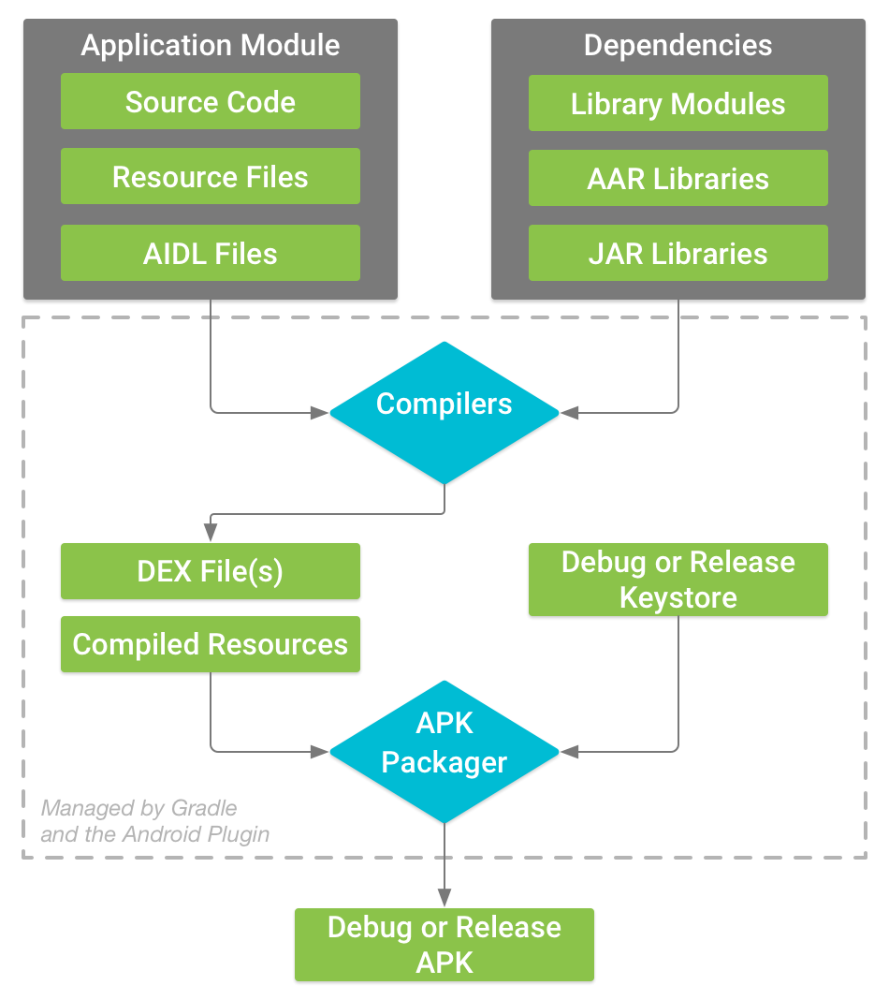

This document describes what happens when you build an app within Android Studio, and how you can configure your app's build.
Developing apps for Android is basically the same as other app platforms, but there are some differences.
A typical workflow involves the following steps:
Android Studio, the official IDE for Android development, is a specialized tool that helps you with app development.
We've already seen how to set up your workspace for Android development, and how to create projects using Android Studio.
As well, we've seen how Android Studio can help write your apps. We've used Android Studio to design User Interfaces (UI), featuring its WYSIWYG Design pane, create and manages resources, and write Java code.
The rest of this document considers the Build and run phase.
Regarding the remaining phases, we've seen how to log debugging messages to Android's logcat. There will be a future lab activity on JUnit testing. The final hybrid activity of the course discusses how to prepare your app for publishing, and shows you how to version your app & sign it with a key.
During the build process, Android Studio builds your project into an Android PacKage (APK) file that you can install on the emulator or physical device.
The build process to make the APK is shown in the following diagram:

The steps:
In Android Studio, you can view your app's signing information:
I opened My First App, and ran the signingReport. Compare your results to mine:
Notes:
After running this report, you'll need to configure Android Studio to run your app: Run > Run... > select: app
Gradle is a popular build tool that compiles and packages apps (see the above screenshot). Android Studio has a gradle plugin that allows you to customize the build process.
Your Android Studio project includes a few Gradle build configuration files:
The app-level gradle.build file, located in the app/ directory, allows you to configure building settings for your app (see above screenshot). Configuring these build settings allows you to provide custom packaging options, such as build types and required dependencies. For example, My First App is dependent on the ConstrainLayout and JUnit (for unit testing; future lab activity).
As an Android designer & developer, you need to make a decision: which version(s) of Android will my app run on?
Once this question has been answered, you'll edit your app's gradle.build file and change the following settings:
The relationship between these three settings can be expressed as:
minSdkVersion <= targetSdkVersion <= compiledSdkVersion
In practice, it's been my experience that targetSdkVersion is equal to the compiledSdkVersion:
minSdkVersion (lowest possible) <= targetSdkVersion == compiledSdkVersion (latest SDK)
From the above screenshot, notice:
minSdkVersion == targetSdkVersion == compiledSdVersion == API 26
Recall, API 26 is Android 8.0, affectionately known as Android 'O' (as in Oreo).
Issue: My First App will only run on devices (emulator or physical) with Android 8.0 For example, My First App will not run on my Motorola X, which is running API 23 of Android (Marshmallow)
Solution: change the app-level gradle.build file, and change the minSdkVersion to 23:
Next, click Sync, and gradle will re-build the app based on the new settings.
Now My First App runs on my Motorola X phone:
For additional information, please see: